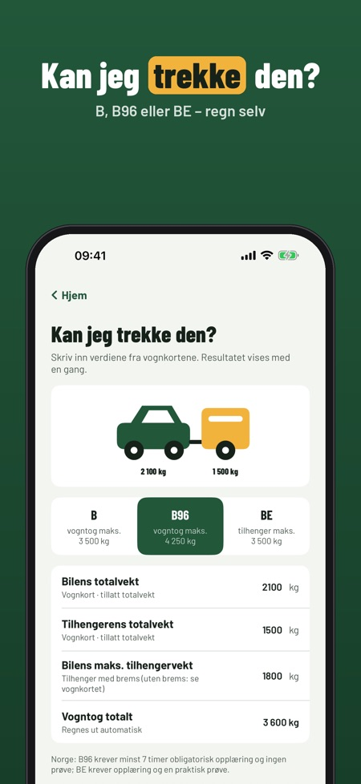
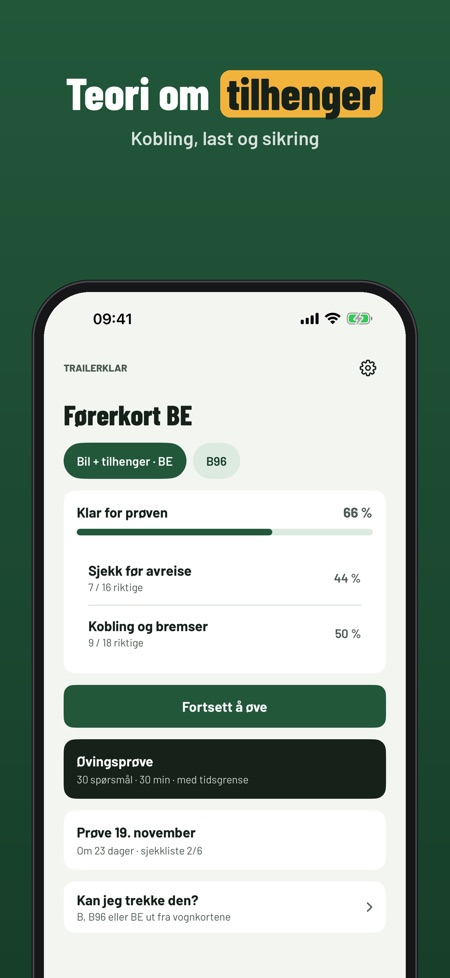
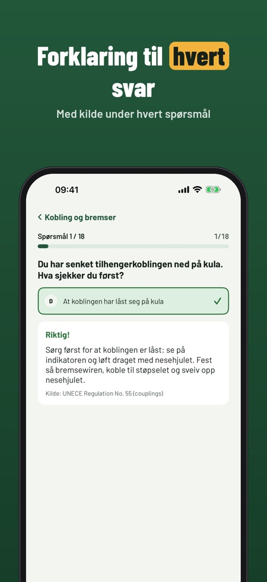

Teori og vektkalkulator for BE. Regn ut om du kan trekke tilhengeren med førerkortet ditt – B, B96 eller BE – og øv på teori om tilhenger, kobling, last og sikring.



Trailerklar regner ut fra vognkortet om du kan trekke tilhengeren med klasse B, B96 eller BE – og lar deg øve på teori om tilhenger, last og kobling.
Kalkulatoren, ordlisten, sjekklisten og 20 spørsmål kan brukes uten kjøp. Fullversjonen er et engangskjøp som låser opp alle spørsmål, prøvetester og statistikk. Ingen abonnement.
Trailerklar er uavhengig og ikke tilknyttet Statens vegvesen. Kalkulatoren er en øvingshjelp – sjekk alltid vognkortet.